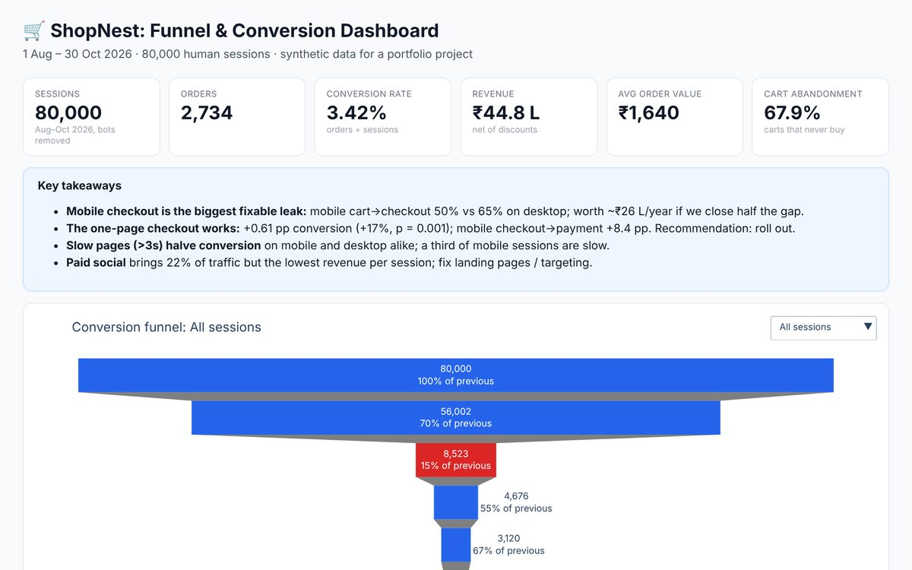
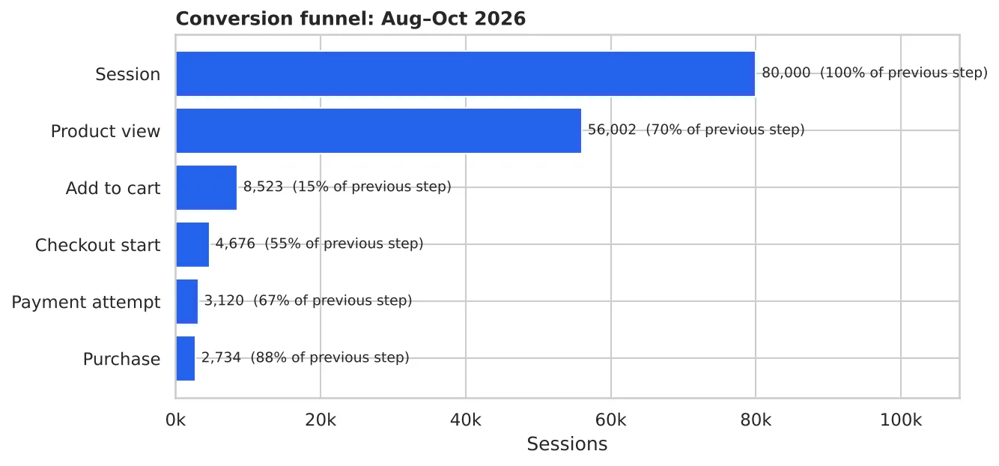
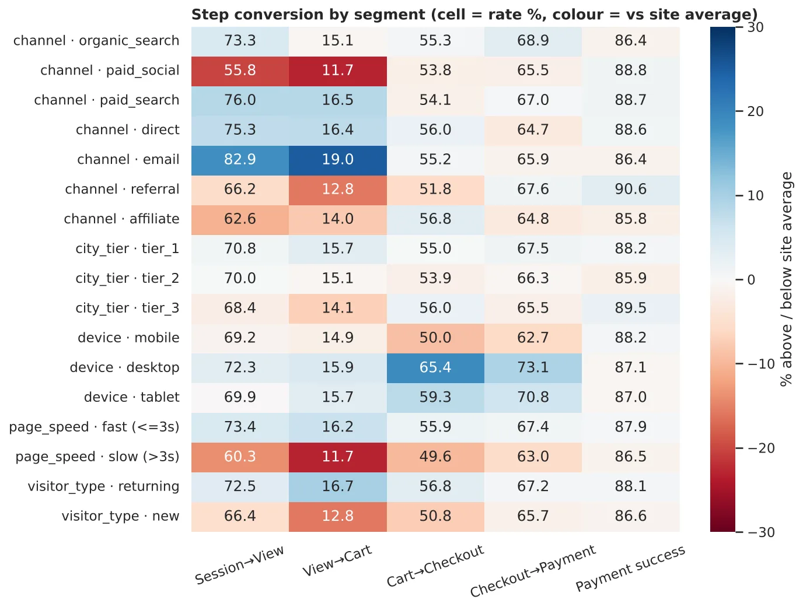
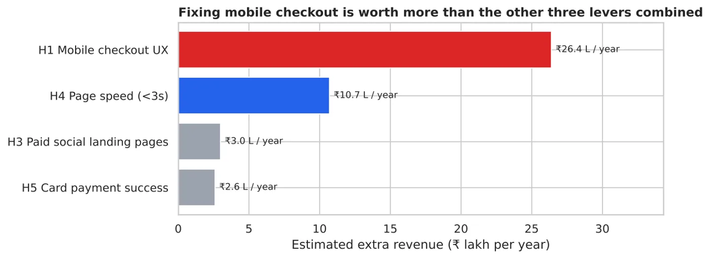
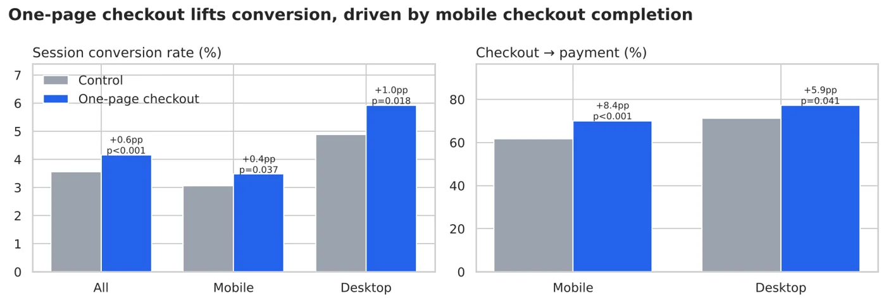

E-commerce · Funnel analytics · A/B testing
Product Funnel & Conversion Optimization
Where is an e-commerce brand losing customers, why, and what should it fix first? I took 80,000 sessions of messy clickstream data from raw export to a costed, tested recommendation.
- +17%conversion from one-page checkout
- p ≈ 0.001A/B test significance
- ~₹26 L/yrbiggest single fix
- 285kevents cleaned

The problem
ShopNest, a fictional Indian D2C brand, gets about 80,000 sessions a quarter but only 3.4% become orders. Two-thirds of traffic is mobile, and the product team had just launched a one-page checkout experiment. Leadership wanted to know which step loses the most customers, which segments under-perform, whether the new checkout works, and what each fix is worth in rupees.
The data
A reproducible synthetic clickstream (sessions, events, orders) with the problems real exports have: bot traffic, duplicate events, mixed timestamp formats and test orders. A cleaning pipeline handles each one and validates that every session's funnel steps happen in order.
Approach
Data quality first
Bot detection, de-duplication, timestamp parsing and funnel-order validation, so every later number is trustworthy.
Exploratory analysis
Funnel by device, channel, city tier, page speed and visitor type, plus timing and payment behaviour.
SQL deep-dive
Seven DuckDB queries (CTEs, UNPIVOT, window functions, QUALIFY, QUANTILE_CONT) rank each segment's weakest step and size every lever in ₹.
A/B test, done properly
Sample-ratio and balance checks, primary metric with confidence interval, mechanism and guardrail metrics, Bonferroni correction, regression adjustment and power.
Dashboard
An interactive Plotly dashboard with KPIs, a segment-filterable funnel, A/B lift and opportunity sizing.
What I found
- Mobile converts 41% worse than desktop (2.84% vs 4.80%), and the gap opens after the cart.
- Pages slower than 3 seconds roughly halve conversion, on mobile and desktop alike.
- 1 in 5 card payments fails (80% success vs 90% for UPI).
- Paid social is the second-largest channel but the weakest: 2.0% conversion, ₹31 revenue per session vs ₹69 for paid search.
| Priority | Lever | Est. extra revenue |
|---|---|---|
| 1 | Mobile checkout UX | ~₹26 L / year |
| 2 | Page speed under 3s | ~₹11 L / year |
| 3 | Paid social landing pages | ~₹3 L / year |
| 4 | Card payment success | ~₹2.6 L / year |
Charts




Live dashboard
Interactive: filter by segment and hover any chart. Open full screen ↗
The key insight
Conversion rose from about 2.4% to 4.0% over the quarter, but returning visitors rose from 23% to 79% of traffic at the same time. A before/after comparison would have wrongly credited the new checkout, so the decision rests on the randomised A/B test: 3.55% → 4.16% (+0.61 pp, 95% CI +0.25 to +0.98 pp). Recommendation: roll out to mobile now and to desktop with a small holdout, then fix page speed (~₹11 L/yr, to be confirmed by a test).
Limitations & next steps
- The data is synthetic, built to mirror real e-commerce patterns; the method transfers directly to a real export.
- Opportunities overlap (slow pages are mostly mobile), so the ₹ figures are not additive.